Empieza aquí
Todo lo que necesitas para arrancar con WillyPost, de principio a fin: instalarlo en tu ordenador, conectar tus redes y programar tu primera publicación. Sin crear apps de desarrollador ni copiar claves: cada red se conecta con un solo «Conectar».
1. Instala WillyPost
No hace falta saber de informática. El instalador no pide contraseña de administrador, tarda unos 2 minutos y necesita internet. Elige tu ordenador:
- Descarga el instalador: Instalar-WillyPost.exe (un archivo pequeño, desde willypost.com). Si el navegador avisa de que el archivo «no se descarga habitualmente», elige Conservar. En Edge: ··· → Conservar → Mostrar más → Conservar de todas formas.
- Haz doble clic en Instalar-WillyPost.exe. Lo tienes en la carpeta Descargas.
- Si sale el aviso azul «Windows protegió su PC» (es Windows SmartScreen), pulsa Más información y después Ejecutar de todas formas. Es normal: Windows avisa así de todos los programas que no vienen de su tienda.
- Espera un par de minutos. Se abre una ventana negra que va contando los pasos (del 1 al 6). Cuando pone LISTO, se abre WillyPost en tu navegador. Ya puedes cerrar la ventana negra pulsando cualquier tecla.
Te deja un icono WillyPost en el Escritorio y en el menú Inicio, y arranca solo al encender el ordenador, sin ventanas. ¿El .exe no te funciona? Mira la descarga manual con ZIP.
- Descarga el archivo ZIP: Descargar WillyPost (ZIP).
- Descomprímelo con doble clic (lo tienes en Descargas) y abre la carpeta que se crea.
- Haz doble clic en «Instalar WillyPost.command» (el que termina en
.command). - La primera vez, el Mac lo bloquea porque viene de internet. Es su aviso de seguridad y es normal:
- macOS 14 (Sonoma) o anterior: pulsa Cancelar, haz clic derecho (o Control + clic) sobre el archivo → Abrir → Abrir.
- macOS 15 (Sequoia) o posterior: pulsa Listo. Abre Ajustes del Sistema → Privacidad y seguridad, baja hasta el final, pulsa Abrir igualmente junto al aviso, pon la contraseña de tu Mac (o Touch ID) y pulsa Abrir.
- Espera unos 2 minutos. La Terminal te cuenta los pasos. Cuando pone LISTO, se abre WillyPost en tu navegador. Si el Mac pregunta si la Terminal puede acceder a Descargas, pulsa Permitir.
Plan B si el Mac no te deja abrirlo (funciona siempre)
Abre la app Terminal (⌘ + Espacio, escribe «Terminal» e Intro). Escribe bash seguido de un espacio, arrastra el archivo «Instalar WillyPost.command» dentro de la ventana y pulsa Intro.
Después encontrarás la app WillyPost con ⌘ + Espacio, y arranca sola al encender el Mac. Si macOS avisa de un «elemento en segundo plano» (puede llamarse node), déjalo activado.
2. Crea tu cuenta (solo la primera vez)
La primera vez que se abre, WillyPost te pide crear tu cuenta. Es solo tuya y se guarda en tu ordenador: no te enviaremos ningún email.
- Escribe Tu nombre, tu Email y una Contraseña (mínimo 8 caracteres) y pulsa Crear mi cuenta.
- Guarda el código de recuperación que te enseña (con Descargar como .txt, por ejemplo). Como todo está en tu ordenador, no hay «recuperar contraseña por email»: si la olvidas, este código es la única forma de volver a entrar.
WillyPost se abre en tu navegador, pero funciona en tu ordenador (en la dirección localhost:4747). Si algún día no lo encuentras, haz doble clic en su icono.
3. Conecta tus redes
En el menú de la izquierda entra en Redes. Cada red tiene su tarjeta con su botón Conectar: lo pulsas, se abre la pantalla oficial de esa red, aceptas y vuelves solo a WillyPost. No tienes que crear ninguna app ni copiar claves.

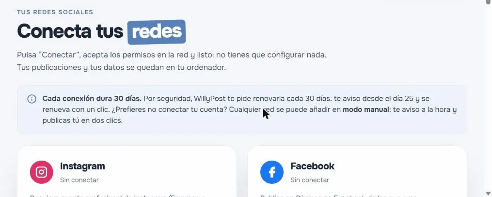
Aquí tienes, red por red, qué cuenta necesitas y qué vas a ver. Si quieres más detalle, cada una tiene su guía completa.
Una cuenta profesional (Empresa o Creador) unida a una Página de Facebook que administres. Instagram se conecta entrando con Facebook: es así para todas las apps nuevas, no es cosa tuya.
Qué verás- Pulsas Conectar Instagram y se abre Facebook. Entra con el Facebook que administra tu Página.
- Facebook te pregunta en varios pasos a qué Páginas, negocios y cuentas de Instagram quieres que acceda WillyPost. Puedes dejar la primera opción («Activar todos…») o elegir «Activar solo…» y marcar las tuyas. Lo importante: que estén tu cuenta de Instagram y también su Página. Pulsa Continuar en cada paso.
- Al final te enseña un resumen de los permisos: pulsa Guardar.
- Sale «… se conectó a WillyPost» y, abajo del todo, el botón De acuerdo. Si no lo ves, baja dentro de la ventana. Púlsalo y vuelves a WillyPost.

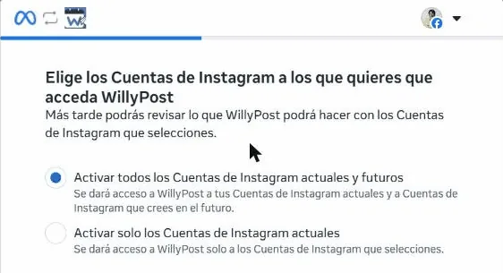

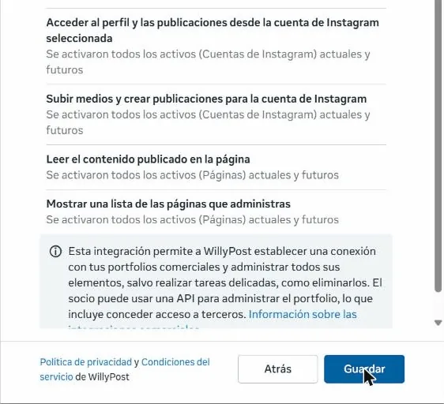

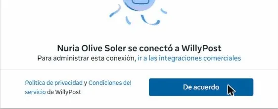
Guía completa de Instagram → (incluye cómo pasar tu cuenta a profesional y unirla a tu Página).
Una Página de Facebook de la que seas administrador/a. WillyPost publica en Páginas, no en perfiles personales.
Qué verásPulsas Conectar Facebook, entras en Facebook y te pregunta a qué Páginas quieres que acceda WillyPost: marca tu Página (y, si te lo pregunta, el negocio donde está) y acepta. Igual que con Instagram, puede que tengas que bajar para ver el último botón. De vuelta en WillyPost, marca tu Página y pulsa Conectar.
Threads
Qué necesitasTu perfil de Threads, que es tu cuenta de Instagram, y la contraseña de Instagram.
Qué verásPulsas Conectar Threads y se abre Threads. En el ordenador, Threads te pide entrar con tu usuario y contraseña de Instagram: aquí no vale entrar con Facebook. Después acepta que WillyPost vea tu perfil y publique en tu nombre.
Es muy normal si siempre entras desde el móvil. En la pantalla de Threads pulsa ¿Has olvidado la contraseña?: te llega un enlace por SMS para crear una nueva. Luego vuelve a pulsar Conectar en WillyPost.
TikTok
Qué necesitasTu cuenta de TikTok y la app de TikTok en el móvil.
Qué verásPulsas Conectar TikTok, entras en TikTok y pulsas Continuar. Ojo: si en tu navegador ya tienes abierta otra cuenta de TikTok, se conectará esa. Antes de continuar, mira qué cuenta aparece y, si no es la buena, pulsa Cambiar de cuenta.
Mientras TikTok no termine de auditar la app de WillyPost, tus vídeos llegan a tu bandeja de TikTok: te salta una notificación en la app del móvil y desde ahí lo publicas con un toque. WillyPost te lo recuerda al crear la publicación:

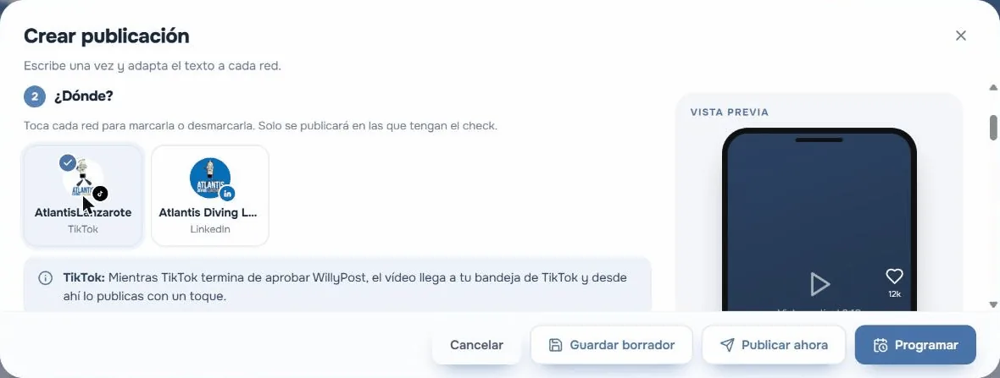
YouTube Shorts
Qué necesitasUn canal de YouTube y la cuenta de Google con la que lo gestionas.
Qué verás- Pulsas Conectar YouTube Shorts y Google te pide elegir cuenta. Elige la del canal correcto: si tienes un canal de marca, aparece aparte, con el nombre del canal y la palabra «YouTube» debajo.
- Google te enseña lo que WillyPost quiere hacer: marca todas las casillas (gestionar y subir tus vídeos de YouTube) y pulsa Continuar.

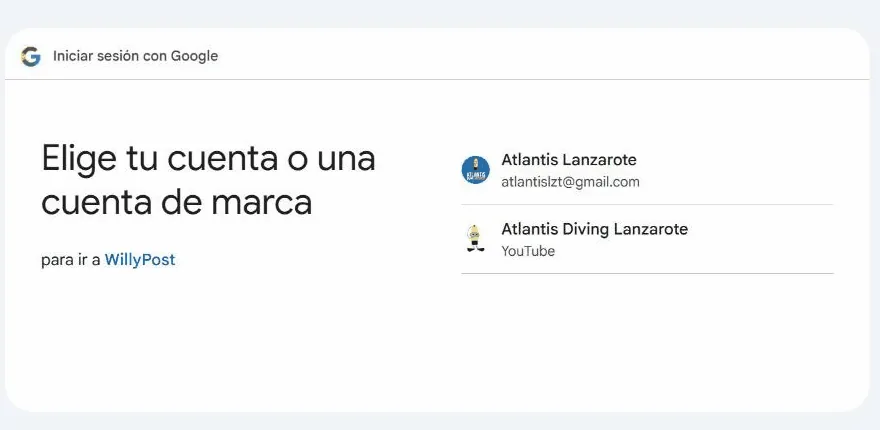

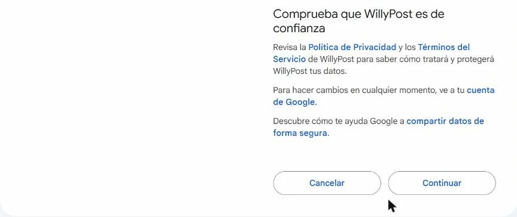
Google Business Profile
Qué necesitasUna ficha de Google verificada de la que seas propietario/a o administrador/a.
Qué verásPulsas Conectar Google Business Profile, eliges la cuenta de Google que gestiona tu ficha, aceptas y, de vuelta en WillyPost, marcas tu ficha. Ya puedes publicar novedades en tu ficha: texto o una foto, con botón.
Tu perfil personal de LinkedIn (las Páginas de empresa no están incluidas).
Qué verásPulsas Conectar LinkedIn, entras si hace falta y pulsas Permitir. Listo.
Bluesky
Qué necesitasTu cuenta de Bluesky y una contraseña de aplicación: una contraseña especial que puedes borrar cuando quieras. Tu contraseña de siempre no se la das a WillyPost.
Qué verás- En Bluesky: Ajustes → Privacidad y seguridad → Contraseñas de aplicación → Añadir contraseña de aplicación. Ponle de nombre WillyPost y copia la contraseña (tiene la forma
xxxx-xxxx-xxxx-xxxxy solo se ve una vez). - En WillyPost → Redes → Bluesky → Conectar con contraseña de aplicación. Escribe tu usuario completo sin la @ (por ejemplo
tuusuario.bsky.social), pega la contraseña de aplicación y pulsa Conectar.
4. Redes en revisión y modo manual
Te lo contamos con sinceridad: para que cualquiera pueda pulsar «Conectar», cada red tiene que revisar y aprobar la app de WillyPost. Algunas (Meta, que es Facebook, Instagram y Threads; TikTok; Google) todavía están en ese trámite. No depende de ti ni de nosotros, sino de la propia red.
- En el índice de guías, cada red lleva una etiqueta que se actualiza sola: «Ya disponible», «En revisión» o «Muy pronto».
- Y, si una red aún está en revisión, su guía te lo avisa arriba del todo.
En la tarjeta de cada red, pulsa Añadir en modo manual y ponle un nombre (por ejemplo, tu @usuario). Programas igual que siempre y, a su hora, WillyPost te avisa con una notificación. En Para publicar a mano tienes el texto y los archivos listos: copias, descargas, lo subes a la red y pulsas Ya lo he publicado. Dos clics.
5. Tu primera publicación
Pulsa + Crear publicación, arriba a la derecha. Se abre una ventana con sus pasos numerados y, a la derecha, la vista previa de cómo quedará.
- ¿Qué vas a publicar? Elige el tipo: Post (texto con imagen), Carrusel (varias imágenes), Reel / Vídeo (vídeo vertical) o Story (dura 24 horas).
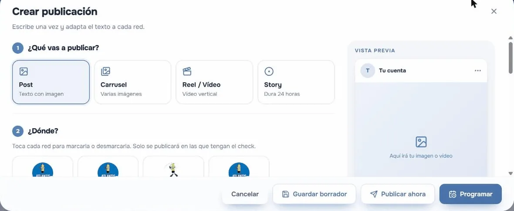
- ¿Dónde? Toca cada red para marcarla o desmarcarla. Solo se publica en las que tienen el check. Si alguna va en modo manual o tiene algo que contarte, WillyPost te lo avisa justo debajo.
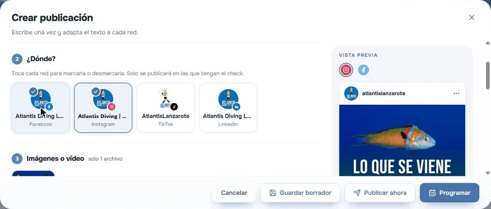
- Imágenes o vídeo. Arrastra tus archivos al recuadro o haz clic para elegirlos en tu ordenador. También puedes usar Elegir de la biblioteca con lo que ya hayas subido.
- Texto. Escribe en Texto base: es el que se usa en todas las redes. Al lado tienes una pestaña por cada red marcada: si cambias el texto ahí, solo cambia en esa red (ideal para los hashtags o para acortar). El contador te avisa si te pasas de caracteres.
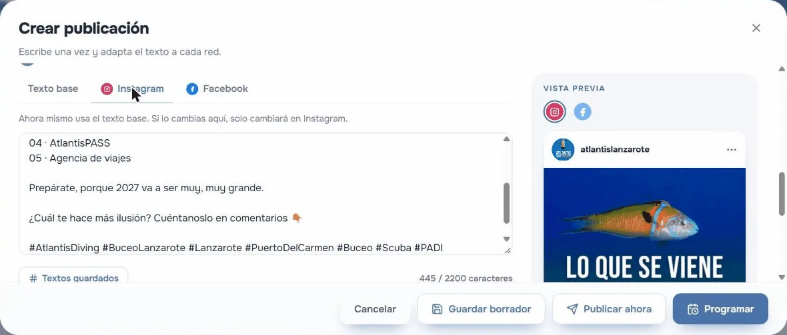
- Ajustes de cada red, debajo del texto, solo si los necesita:
- TikTok: en «¿Quién puede verlo?» elige tú una opción (TikTok pide que la marques tú; no viene ninguna puesta) y qué pueden hacer los demás (comentarios, dúos, stitch).
- YouTube: escribe el Título del vídeo (obligatorio; hay un enlace para usar la primera línea del texto) y elige la privacidad: Público, No listado o Privado.
- Google Business Profile: si quieres, un botón (Reservar, Llamar ahora, Más información…) con su enlace.
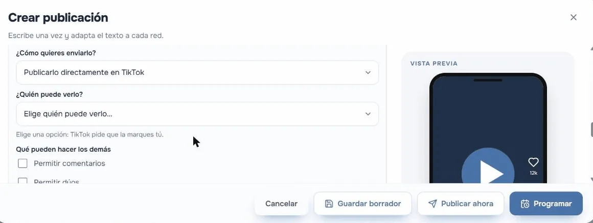
Los ajustes de TikTok: hay que elegir quién puede verlo. - ¿Cuándo? Elige Elegir día y hora o Añadir a la cola (WillyPost busca el siguiente hueco libre en tus horas buenas). Y abajo:
- Programar (o Añadir a la cola): se publica sola a su hora.
- Publicar ahora: te pregunta «¿Publicar ahora?» y confirmas con Sí, publicar ahora.
- Guardar borrador: para terminarla otro día.


WillyPost vive en tu ordenador: publica a su hora si el ordenador está encendido. Si estaba apagado, al arrancar te pregunta qué hacer con lo que se quedó atrás (publicar ahora, reprogramar u omitir).
6. Renueva tus conexiones cada 30 días
Por seguridad, cada conexión dura 30 días. Desde el día 25, WillyPost te avisa y la renuevas en un momento: Redes → Reconectar y vuelves a aceptar. Si no lo haces, esa cuenta deja de publicar hasta que reconectes.
7. Problemas frecuentes
Chrome me rellena una contraseña antigua y no me deja entrar
Chrome a veces pone solo una contraseña que tenía guardada, aunque ya no sea la buena (pasa mucho con Instagram y Threads). Borra lo que haya en el campo de la contraseña, escribe la actual a mano y entra. Si no la recuerdas, usa ¿Has olvidado la contraseña?.
La ventana de permisos se queda en blanco o no veo el botón para terminar
Muchas veces el botón (De acuerdo, Guardar o Continuar) está más abajo: baja dentro de la ventana con la rueda del ratón. Si la ventana se queda en blanco, ciérrala, vuelve a WillyPost y pulsa Conectar otra vez.
«La conexión ha caducado (pasaron más de 30 minutos)»
La pantalla de permisos tiene un tiempo límite: si la dejas abierta mucho rato, caduca. No pasa nada: vuelve a WillyPost y pulsa Conectar otra vez.
Al volver, el navegador dice «No se puede acceder a este sitio»
WillyPost estaba cerrado. Ábrelo con su icono (en Mac, ⌘ + Espacio y escribe WillyPost) y recarga la pestaña con F5.
La red me dice que la app no está disponible o que no tengo permiso
Seguramente esa red todavía está revisando la app de WillyPost. Mira su etiqueta en el índice de guías y, mientras tanto, añádela en modo manual.
¿Te has atascado en otra cosa? Pregunta en la comunidad de la Academia o escribe a nuria.olive@gmail.com contando en qué paso estás.